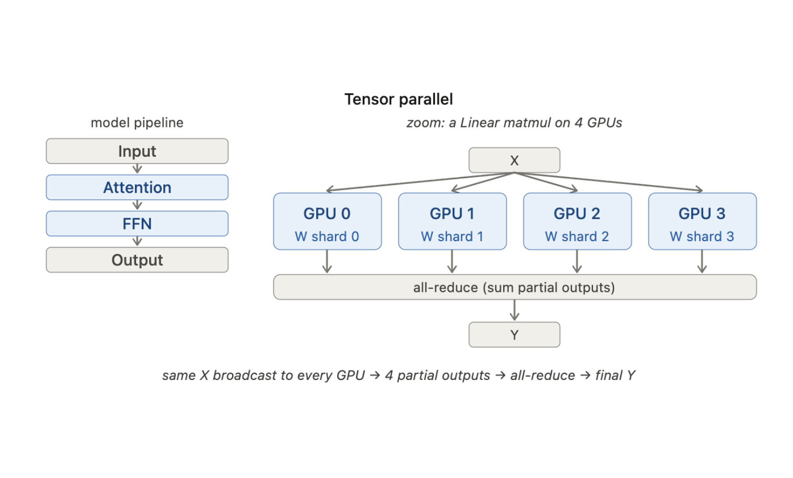
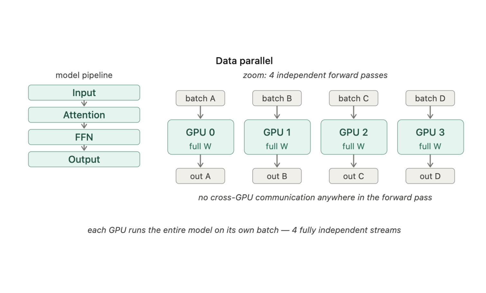
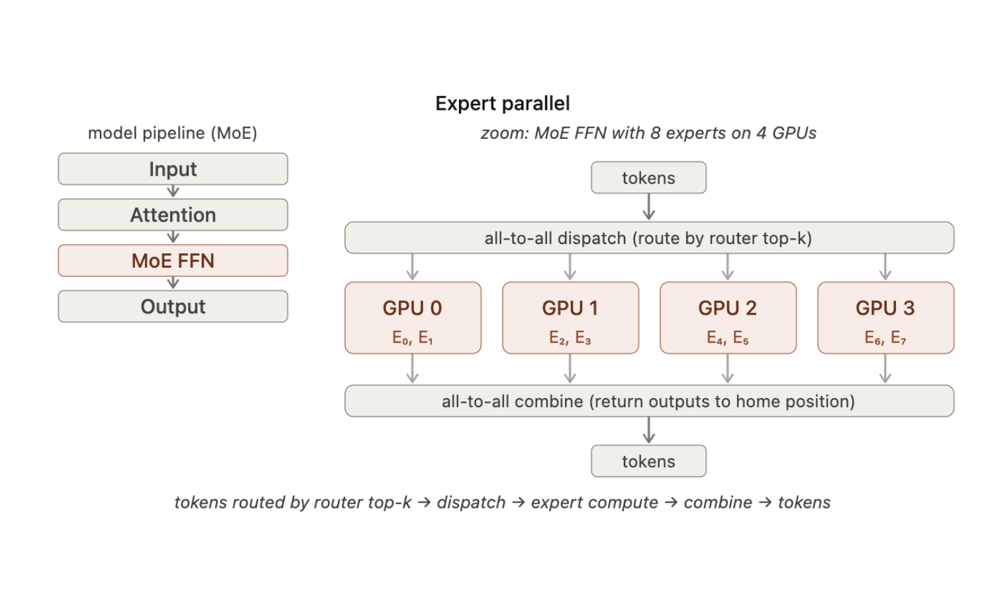
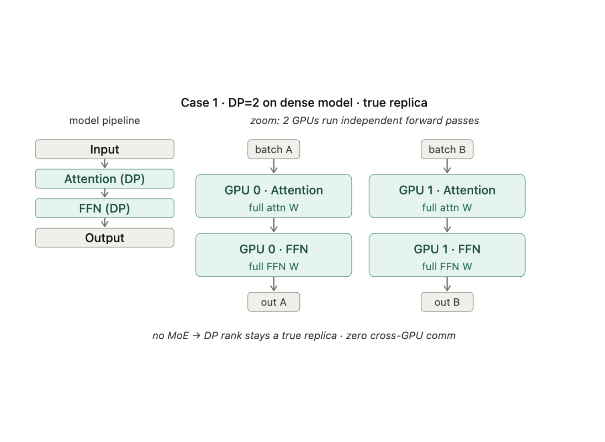
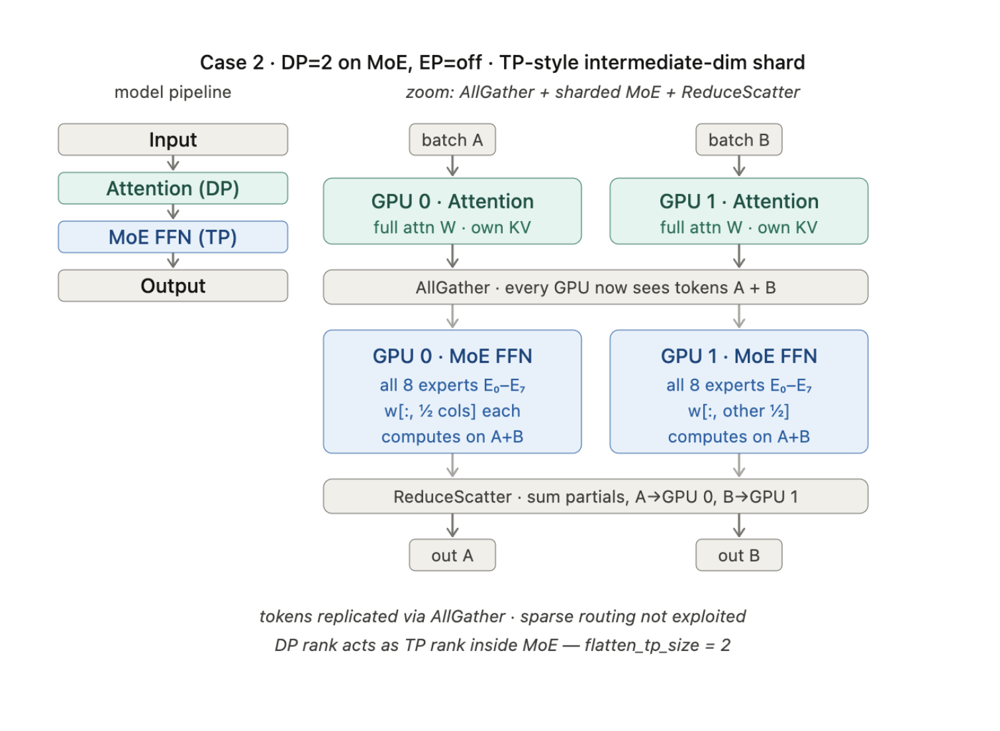
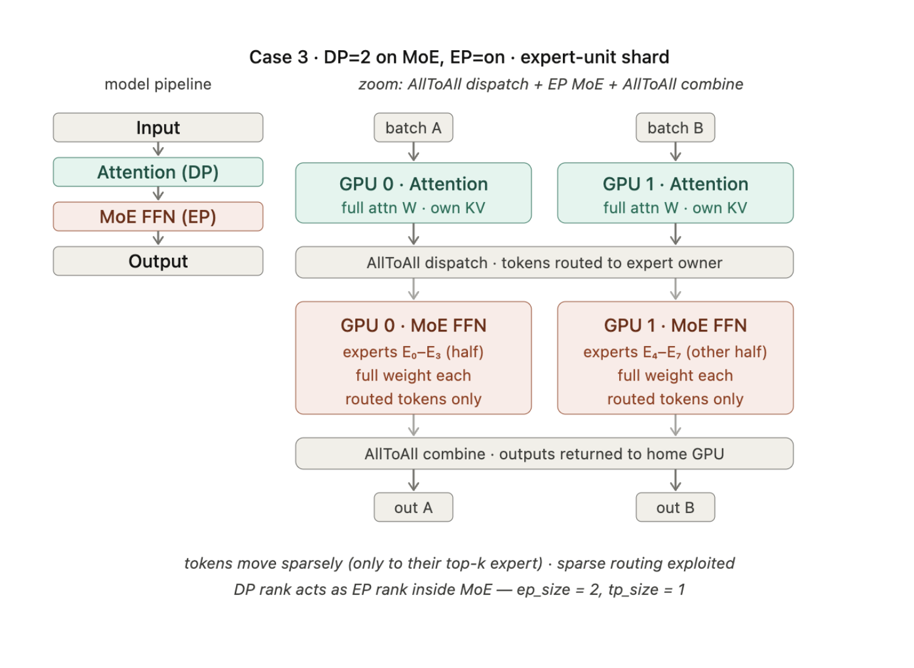
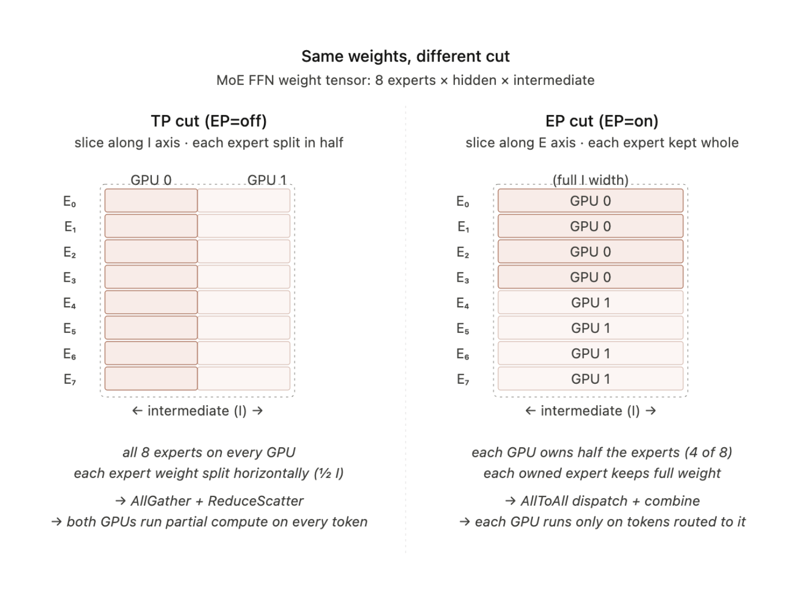
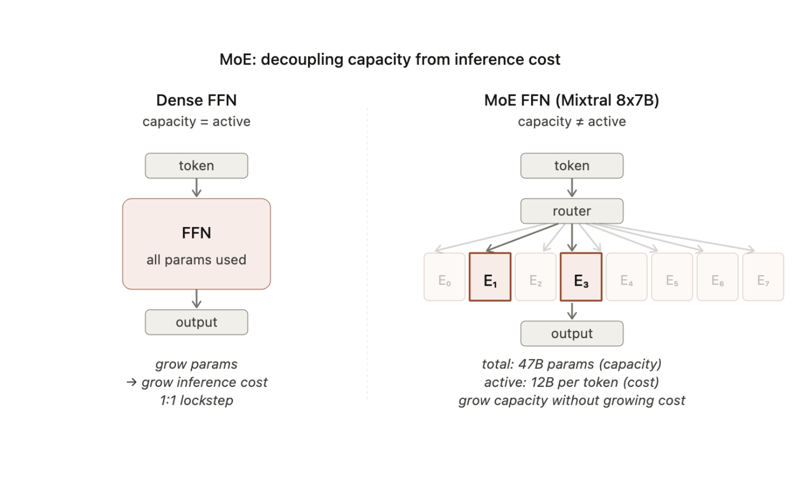
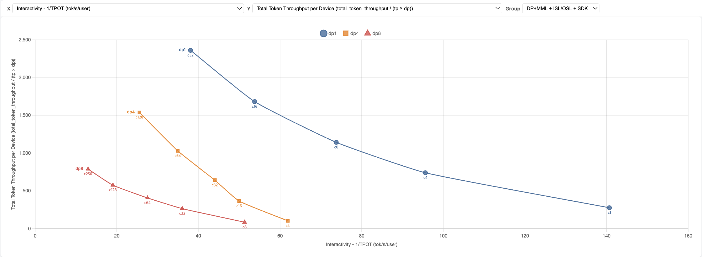

Reference: AMD ROCm — vLLM MoE Guide
tl;dr TP / DP / EP

A single model split across GPUs.

The same model replicated on each device.

FFN computation partitioned by expert.
tl;dr TP / DP / EP @ vLLM (w. MoE models)


flatten_tp_size = 2.
ep_size = 2.The critical difference: with EP OFF, experts are sharded horizontally (each GPU holds a slice of every expert). With EP ON, experts are assigned wholly (each GPU owns a subset of experts in full).

Background: Why MoE?

In the Transformer architecture, both memory and time complexity grow with attention. This makes it easy to assume that Self Attention dominates compute in LLMs. However, the Feed Forward Network actually accounts for more parameters and a significant share of total computation.
Llama2-13B's
LlamaDecoderLayer consists of Self Attention and MLP (Feed Forward).
Counting the parameters for each:
| Llama2-13B | LlamaAttention | LlamaMLP |
|---|---|---|
| 13.02B | 4.19B | 8.49B |
The MLP has nearly 2x the parameters of all the query, key, and value projections in Attention combined. Optimizing the Feed Forward layers can have a larger impact on overall throughput than optimizing Attention alone.
Mixtral 8x7B
What about MoE models? Let's look at Mixtral 8x7B.
| Mixtral 8x7B | MixtralAttention | MixtralMoeBlock |
|---|---|---|
| 46.70B | 1.34B | 45.10B |
Mixtral's 8 routed experts hold 33x more parameters than MixtralAttention. Since only 2 experts are activated per token, the effective parameter usage during inference is roughly 33/4 ≈ 8x.
Mixtral 8x7B uses a slightly different scaling strategy. Per Scaling Laws for Neural Language Models (eq. 2.1), the FFN intermediate dimension d_{ff} is typically set to ~4x the model/attention dimensions d_{attn}, d_{model}.
| Model | d_{ff} | d_{model} | d_{ff}/d_{model} |
|---|---|---|---|
| Kaplan et al. | - | - | 4 |
| Llama2 13B | 13824 | 5120 | 2.7 |
| Mixtral 8x7B | 14336 | 4096 | 3.5 |
The key difference from Llama2 is that Mixtral has smaller attention parameters (Llama2-13B: 4.19B vs Mixtral 8x7B: 1.34B) while scaling up the Feed Forward d_{ff} dimension. This design is reported to outperform Llama2 at comparable active parameter counts.
Benchmark: DP scaling on gpt-oss-120b

Expert Parallelism in vLLM
determine_expert_map()
vllm/model_executor/layers/fused_moe/layer.py
def determine_expert_map(
ep_size: int,
ep_rank: int,
global_num_experts: int,
expert_placement_strategy: ExpertPlacementStrategy = "linear",
num_fused_shared_experts: int = 0,
return_expert_mask: bool = False,
) -> tuple[int, torch.Tensor | None, torch.Tensor | None]:
"""
Calculates how many experts should be assigned to each rank for EP
and creates a mapping from global to local expert index.
Experts are distributed evenly across ranks.
"""
assert ep_size > 0
if ep_size == 1:
return (global_num_experts, None, None)
# Distribute experts as evenly as possible to each rank.
base_experts = global_num_experts // ep_size
remainder = global_num_experts % ep_size
local_num_experts = base_experts + 1 if ep_rank < remainder \
else base_experts
# Create a tensor of size num_experts filled with -1
expert_map = torch.full((global_num_experts,), -1, dtype=torch.int32)
if expert_placement_strategy == "linear":
start_idx = ep_rank * base_experts + min(ep_rank, remainder)
expert_map[start_idx : start_idx + local_num_experts] = \
torch.arange(0, local_num_experts, dtype=torch.int32)
elif expert_placement_strategy == "round_robin":
local_log_experts = torch.arange(
ep_rank, global_num_experts, ep_size, dtype=torch.int32
)
expert_map[local_log_experts] = \
torch.arange(0, local_num_experts, dtype=torch.int32)FusedMoEParallelConfig.make()
vllm/model_executor/layers/fused_moe/config.py
— core logic that determines the parallel config based on the TP, DP, EP combination:
@staticmethod
def make(tp_size_, pcp_size_, dp_size_, sp_size_, vllm_parallel_config):
"""
Examples:
TP=2, DP=1, EP=False:
device 0: TP={2,0} DP={1,0} EP={1,0}
device 1: TP={2,1} DP={1,0} EP={1,0}
# Tensors sharded across 2 devices.
TP=2, DP=2, EP=False:
device 0: TP={4,0} DP={2,0} EP={1,0}
device 1: TP={4,1} DP={2,0} EP={1,0}
device 2: TP={4,2} DP={2,1} EP={1,0}
device 3: TP={4,3} DP={2,1} EP={1,0}
# 2 engine instances, tensors sharded across 4 devices.
TP=2, DP=2, EP=True:
device 0: TP={1,0} DP={2,0} EP={4,0}
device 1: TP={1,0} DP={2,0} EP={4,1}
device 2: TP={1,0} DP={2,1} EP={4,2}
device 3: TP={1,0} DP={2,1} EP={4,3}
# 2 engine instances, experts split between 4 devices.
"""
use_ep = (
dp_size_ * pcp_size_ * tp_size_ > 1
and vllm_parallel_config.enable_expert_parallel
)
if not use_ep:
return FusedMoEParallelConfig(
tp_size=tp_size, tp_rank=tp_rank, ...)
# EP: each device owns a set of experts fully.
# TP collapses to 1 — no tensor sharding inside experts.
assert use_ep
ep_size = tp_size # TP world becomes EP world
ep_rank = tp_rank
return FusedMoEParallelConfig(
tp_size=1, tp_rank=0,
ep_size=ep_size, ep_rank=ep_rank, ...)ep_size = tp_size and tp_size = 1.
The TP world is directly converted into the EP world —
each device owns its experts in full, with no tensor sharding within them.